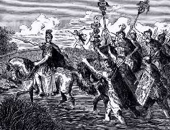

Борис Акунин
Мой календарь
Если вы долго на что-то не могли отважиться, потому что страшновато и как бы чего не вышло, сегодня самый правильный день стиснуть зубы - и вперед.
В 49 году до христианской эры Юлий Цезарь, проконсул Галлии, конфликтовавший с центральным правительством, привел свой легион на самый рубеж Италии и заколебался, переправляться через пограничную реку Рубикон или нет. Переправиться - означало нарушить законы и стать мятежником. Остаться на этом берегу - сохранить себе жизнь, но утратить шанс на величие.
Сейчас, две тысячи лет спустя, нам, собственно, неважно, что они там в Древнем Риме не поделили. Важно, что 10 января Цезарь перешел через Рубикон и сказал: «Alea iacta est», «Жребий брошен».
Как мы знаем из истории, всё у него получилось. (Во всяком случае получилось то, чего он хотел).
А значит, нынче правильный день, чтобы перестать колебаться и начать действовать. В вашей группе поддержки сам Цезарь. Завтра может быть поздно.